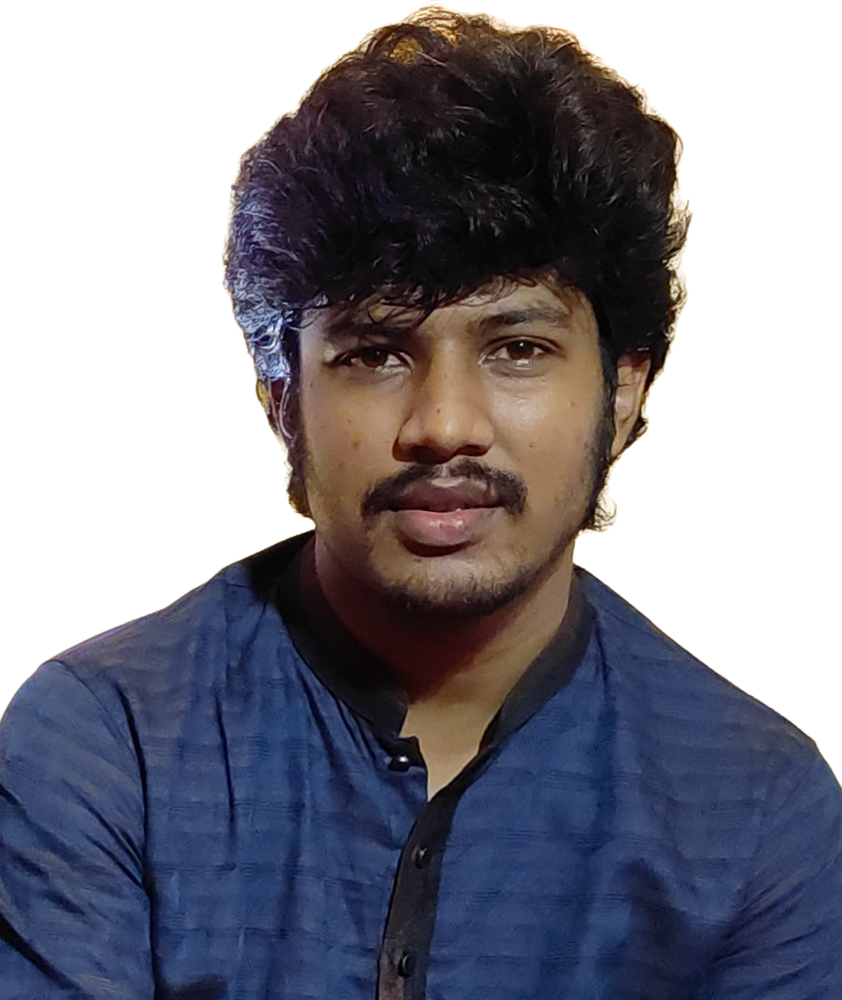

Lecturer in Physics · Materials Physics and Nanomaterials
Department of Physics, University of Dhaka
I am a Lecturer in the Department of Physics at the University of Dhaka. My research lies in experimental materials physics, with a focus on how composition and nanoscale structure shape the optical, catalytic and magnetic behavior of functional materials.
I currently study the nonlinear optical response of oxide–graphene nanocomposites using Z-scan and thermal-lensing techniques at the Centre for Advanced Research in Sciences (CARS), University of Dhaka. I also work on photocatalytic nanocomposites for wastewater treatment, and previously on magnetite nanoparticles for magnetic heating applications.
Z-scan and thermal-lensing studies of nonlinear absorption and refraction in oxide–graphene nanocomposites.
ZnO–rGO and GO–SnO2 nanocomposites for efficient, recyclable degradation of pollutants in wastewater.
Synthesis of magnetite (Fe3O4) nanoparticles and their structural, magnetic and heating properties.
Complete list on Google Scholar.
Department of Physics, University of Dhaka
Department of Physics, University of Dhaka, Dhaka 1000, Bangladesh
Email: kamal@du.ac.bd